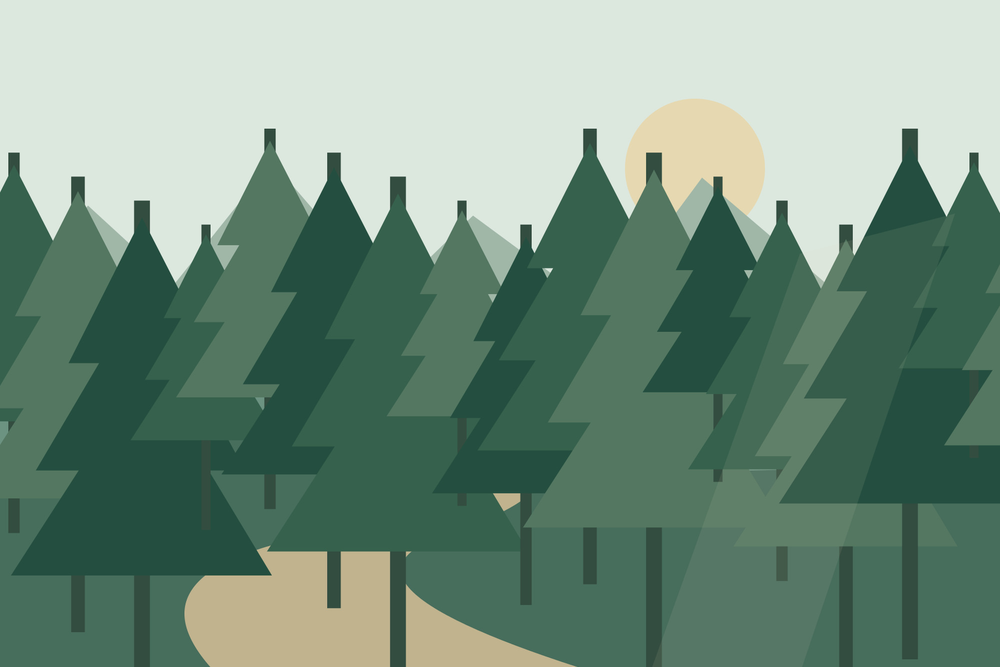
Menginap di tepi teluk
ARUVA — Teluk Timur
Suite, vila, santap musiman, dan panduan kedatangan.
32 halaman demo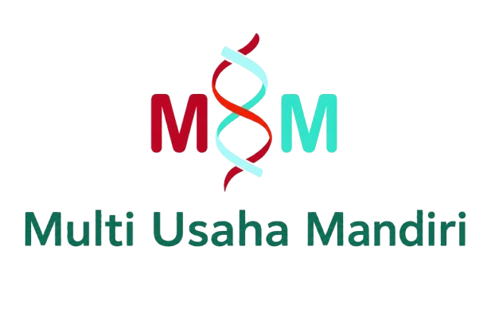
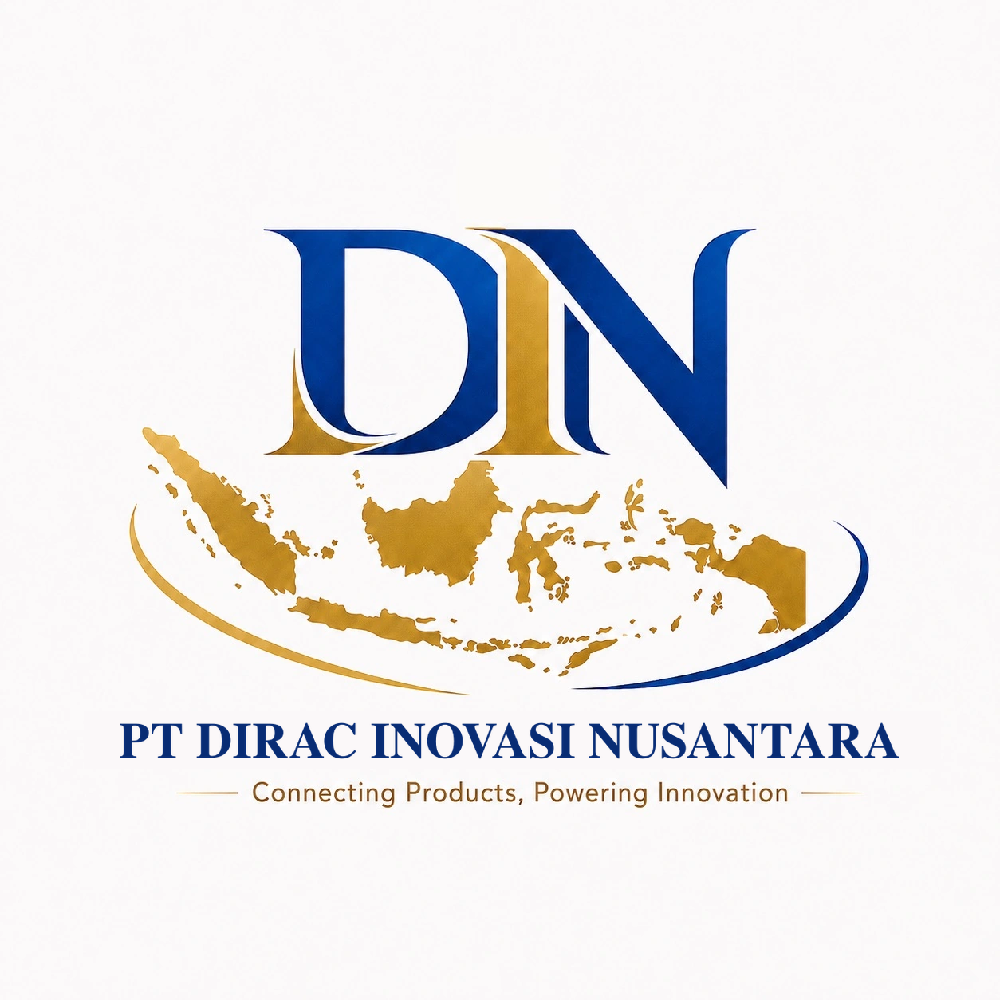
CV Multi Usaha MandiriIndustri berbeda. Karakter berbeda.
Bandingkan tata letak, alur layanan, dan karakter visual dari setiap contoh. Buka demo untuk menilai pengalaman dari halaman utama sampai detailnya.
Coba bidang lain atau sederhanakan kata pencarian.

Menginap di tepi teluk
Suite, vila, santap musiman, dan panduan kedatangan.
32 halaman demo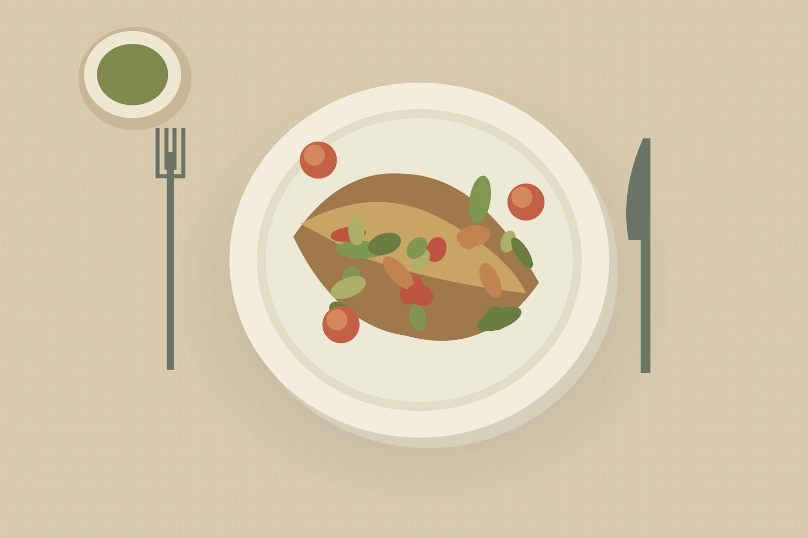
BukaRuang untuk keseharian
Hunian, ruang kerja, material, dan tahapan perancangan.
32 halaman demoRancang perjalanan Anda
Bandingkan model, jelajahi spesifikasi, dan coba konfigurator.
32 halaman demo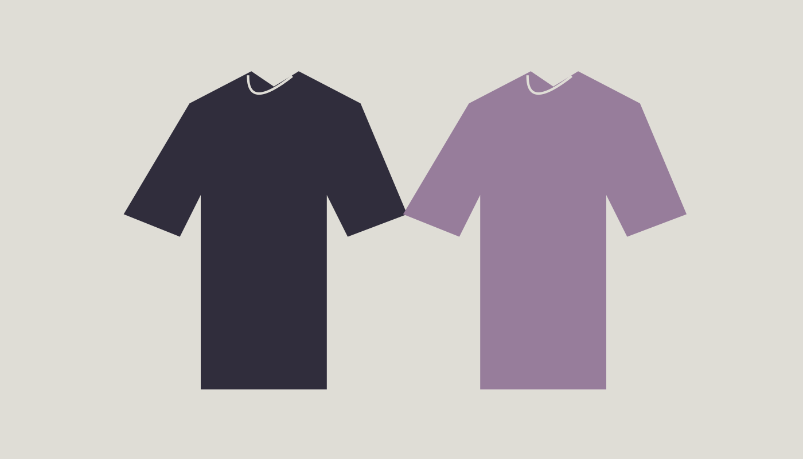
Buka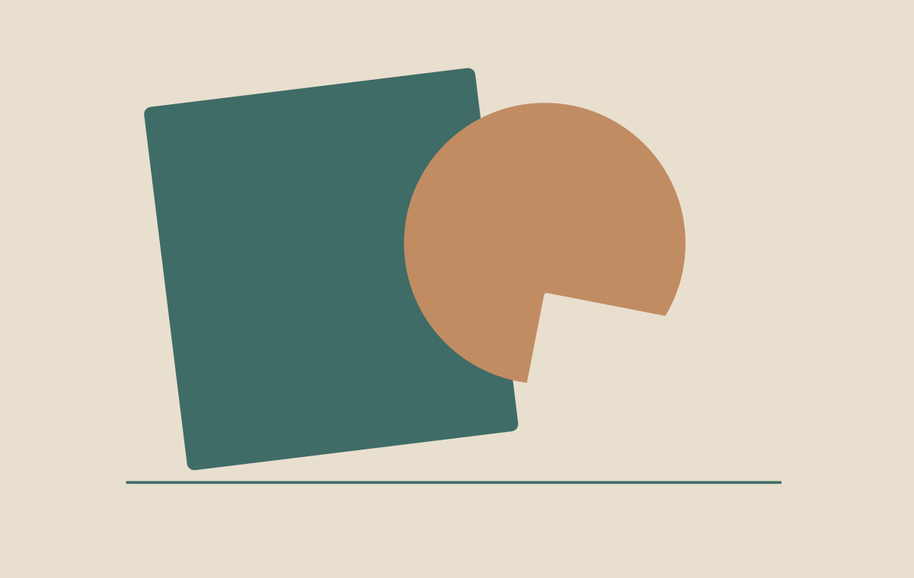
Buka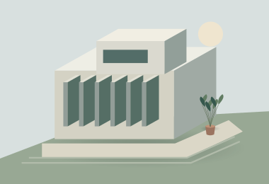
Temukan alamat berikutnya
Pencarian properti, kawasan, pembiayaan, dan jadwal kunjungan.
33 halaman demo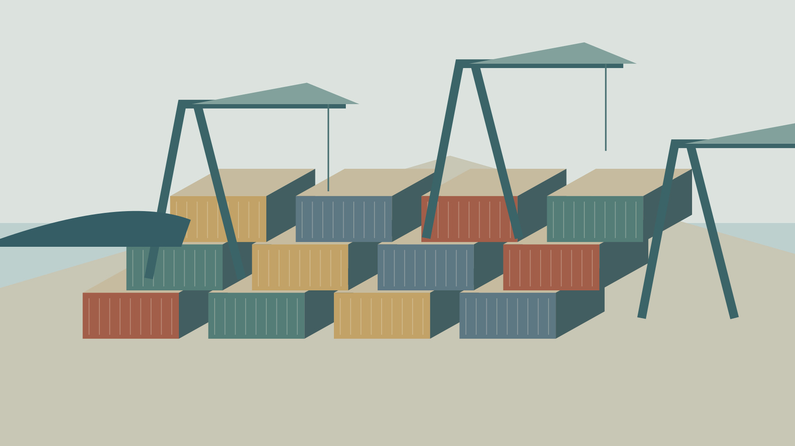
Mendukung operasional usaha
Pengadaan, kontraktor, portofolio, dan kebutuhan proyek.
37 halaman demo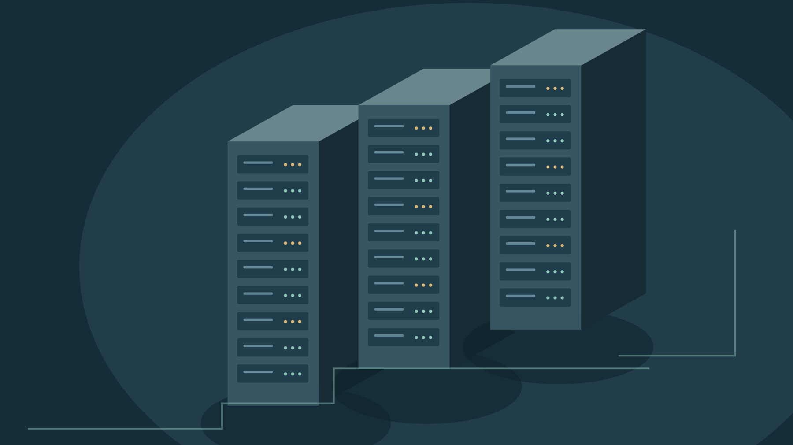
Sistem digital yang terhubung
Pengembangan aplikasi, infrastruktur, keamanan, dan dukungan.
37 halaman demoMerencanakan langkah usaha
Strategi, riset, operasi, dan pendampingan organisasi.
32 halaman demoKejelasan untuk setiap keputusan
Bidang praktik, tim, wawasan, dan proses konsultasi.
40 halaman demo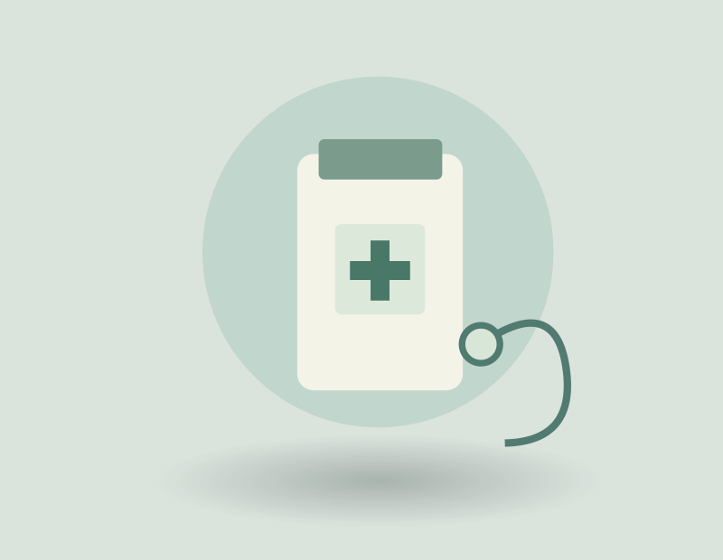
Perjalanan pasien yang jelas
Layanan spesialis, dokter, perencanaan kunjungan, dan janji demo.
38 halaman demo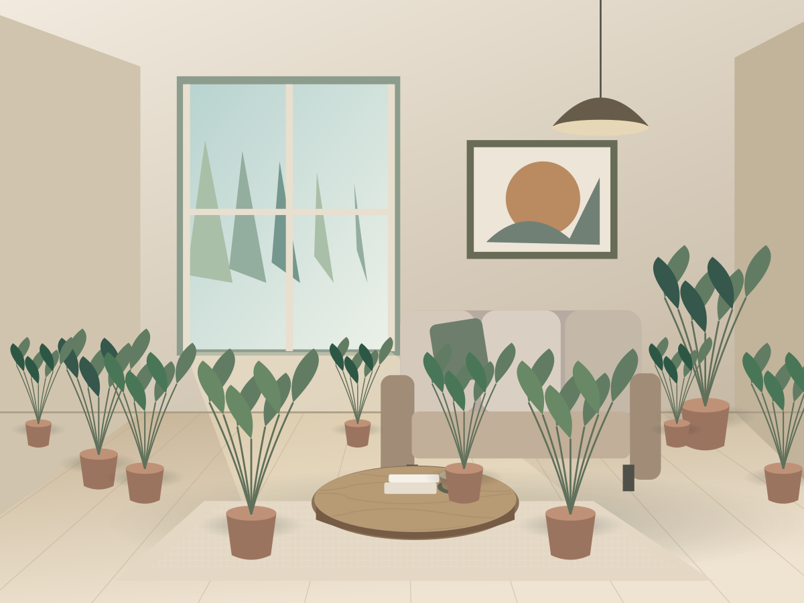
Layanan warga dalam satu portal
Administrasi, perizinan, pengaduan, dan panduan dokumen.
33 halaman demo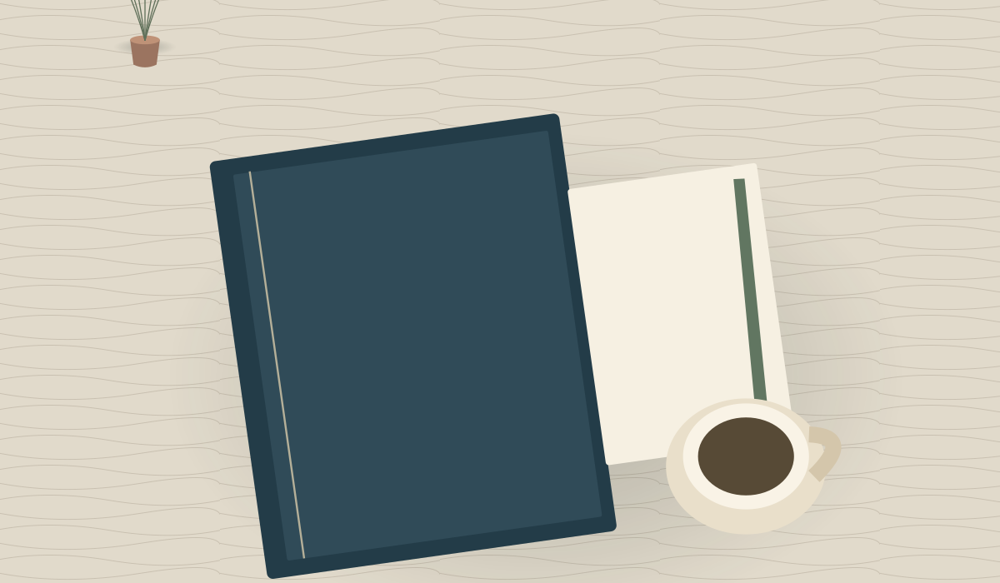
Keuangan dalam pandangan utuh
Produk, perbandingan, wawasan, dan simulasi perencanaan.
33 halaman demo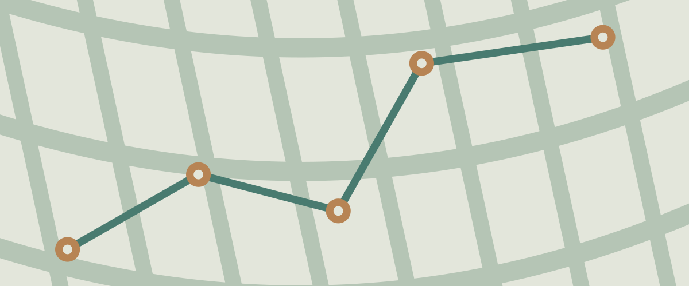
Perjalanan barang yang terukur
Rute pengiriman, dokumen, pelacakan contoh, dan panduan kargo.
33 halaman demo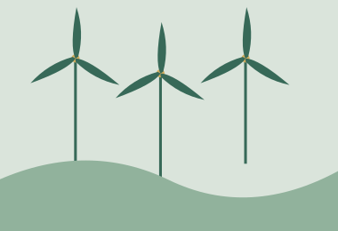
Informasi energi sehari-hari
Pemakaian, tagihan, meter, dan bantuan layanan.
33 halaman demo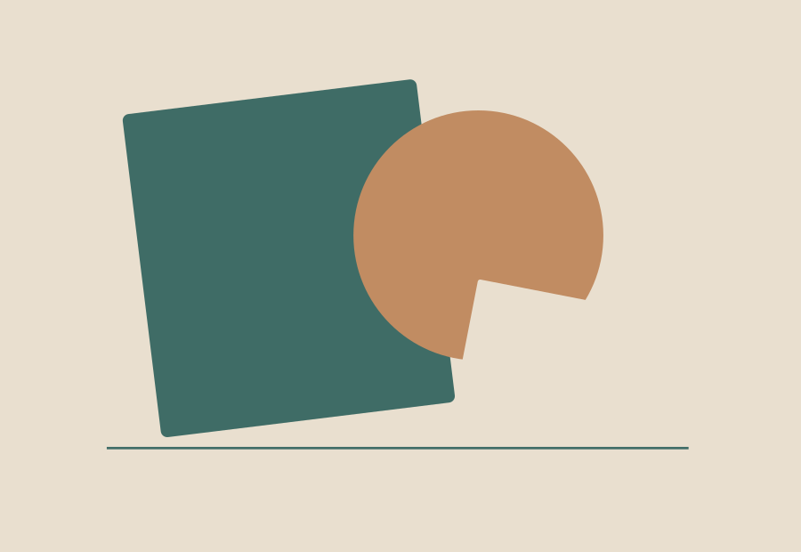
Belajar melalui karya
Program, pengajar, penerimaan, dan kehidupan belajar.
35 halaman demo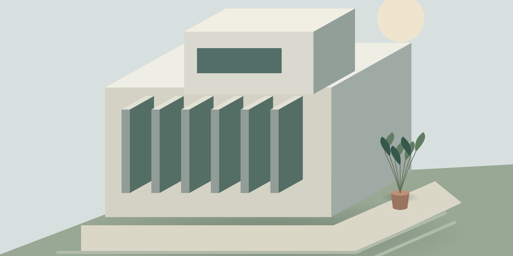
Membaca persoalan lebih dekat
Berita contoh, analisis, topik, dan standar editorial.
33 halaman demo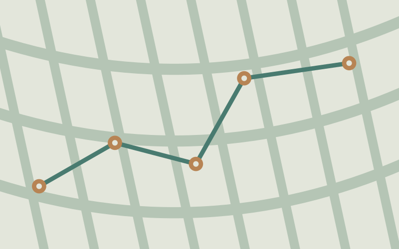
Dari program menuju bukti
Program lapangan, laporan, relawan, dan transparansi.
33 halaman demo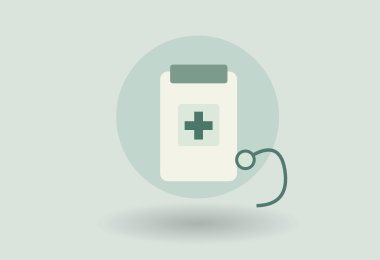
Riset yang dapat ditelusuri
Program ilmiah, publikasi, kemitraan, dan tata kelola riset.
33 halaman demo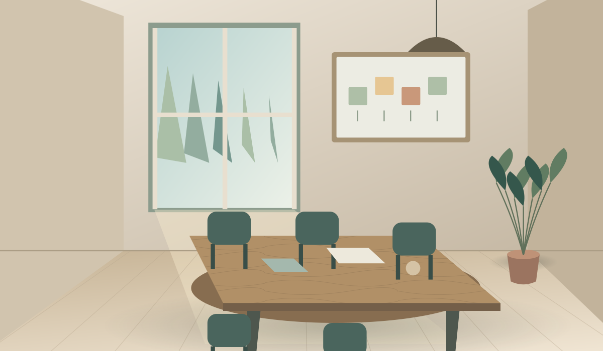
Pekerjaan yang sesuai arah Anda
Lowongan contoh, profil perusahaan, perencanaan, dan lamaran demo.
38 halaman demoSusun agenda pertunjukan
Artis, panggung, jadwal, tiket demo, dan panduan pengunjung.
32 halaman demoDekat dengan klub
Pertandingan, pemain, tiket demo, dan komunitas pendukung.
32 halaman demoRencanakan keberangkatan
Pencarian penerbangan, bagasi, layanan, dan perjalanan demo.
32 halaman demoMasuki dunia Nacre
Karakter, peta dunia, mekanik permainan, dan catatan pengembang.
32 halaman demoTemukan cerita pilihan
Film, koleksi, jadwal tayang, dan daftar tontonan demo.
32 halaman demo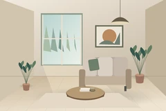
Ruang dan keseharian
Ruang, material, cahaya, dan panduan merancang hunian yang tenang.
32 halaman demoStudio digital eksperimental
Sistem identitas, tipografi, interaksi, dan proses menyusun brief digital.
32 halaman demo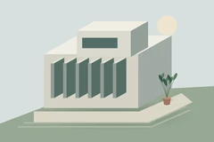
Arsitektur dan ruang publik
Kajian hunian, ruang bersama, material, dan proses perancangan.
32 halaman demo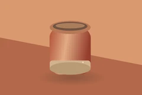
Konsep produk audio
Eksplorasi material, kebiasaan mendengar, panduan penggunaan, dan tas demo.
32 halaman demo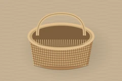
Jurnal kerajinan
Bahan, kerja tangan, proses tenun, dan catatan membaca yang dapat disimpan.
32 halaman demo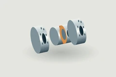
Konsep rekayasa presisi
Catatan komponen, dokumentasi teknis, inspeksi, dan perawatan sebagai simulasi.
32 halaman demoLaboratorium kreatif
Latihan visual, batasan kreatif, lembar kerja, dan cara meninjau sebuah gagasan.
32 halaman demo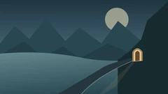
Konsep sinema
Catatan treatment, komposisi bingkai, nada gambar, dan proses praproduksi.
32 halaman demoAtlas lingkungan konseptual
Peta ilustratif, lapisan pengamatan, dan panduan menyusun catatan lapangan.
32 halaman demo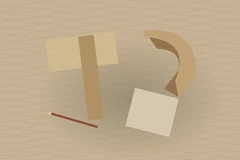
Material dan bengkel desain
Sifat material, sambungan, perawatan, dan penyusunan brief benda sehari-hari.
32 halaman demo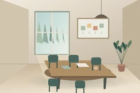
Informasi komunitas
Direktori layanan dan ruang bersama dengan bahasa petunjuk yang tegas.
32 halaman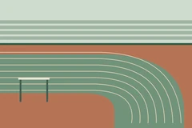
Buka ↗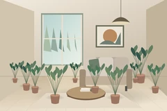
Buka ↗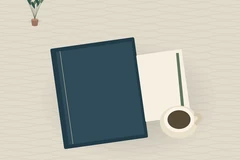
Administrasi keuangan
Dokumentasi internal dengan struktur ledger dan jejak perubahan.
32 halaman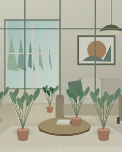
Botanical experience
Rute observasi, zona kebun, dan fase kuratorial fiktif.
32 halaman